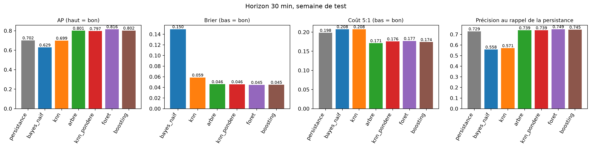
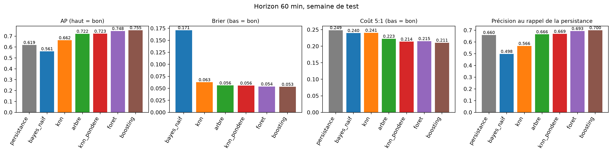
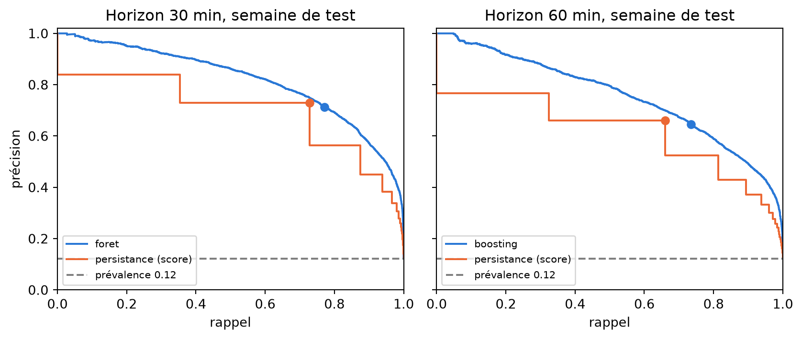
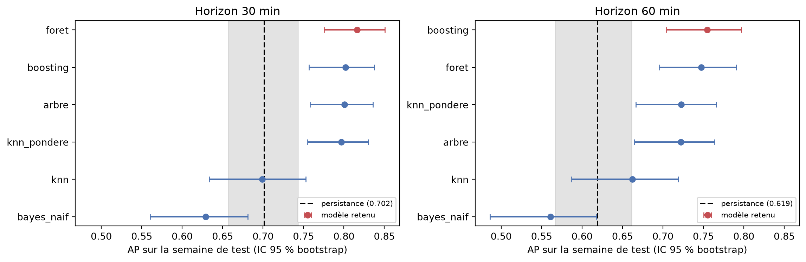
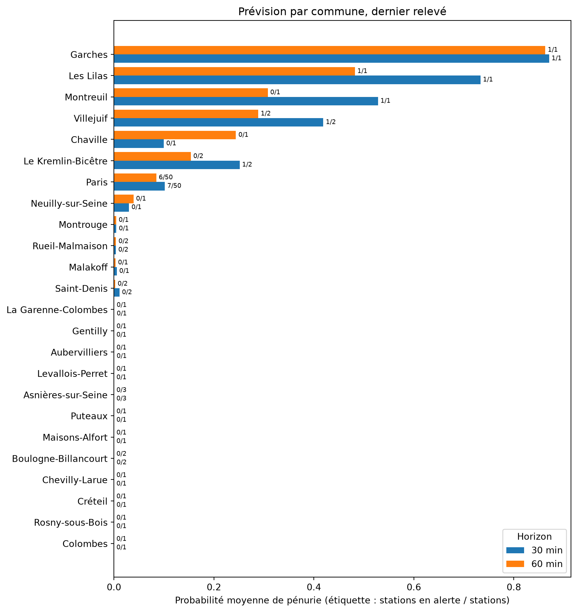
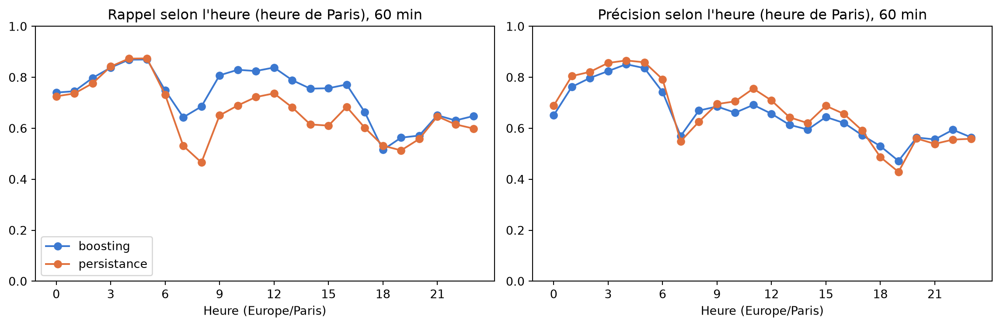

Les modèles sont ajustés sur le train ; leurs hyperparamètres, leurs seuils et le choix du modèle retenu sont fixés sur la validation. La semaine de test n’est utilisée qu’une seule fois, pour chaque horizon.


# Prédictions sur le test : calculées une seule fois, puis relues depuis le cache
TE = cached(f"cache/TE_{CRITERION}.joblib",
lambda: {h: evaluate_models(R[h], R[h]["test"]) for h in HORIZONS}) # (tableau, scores, seuils)
COLS = ["AP", "precision", "recall", "F1", "TP", "FP", "FN", "TN"]
for h in HORIZONS:
res, (table, sc, taus) = R[h], TE[h]
te = res["test"]
chosen = res["chosen"]
print(f"horizon {h} min | {len(te)} lignes | taux de positifs : {te['y'].mean():.3f} | modèle retenu : {chosen}")
display(table[COLS].round(3))
pers = table.loc["persistance"]
at_recall = precision_at_recall(te["y"], sc[chosen], pers["recall"])
print(f"Même rappel ({pers['recall']:.3f}) : précision {pers['precision']:.3f} pour la persistance "
f"contre {at_recall:.3f} pour {chosen}")
print()horizon 30 min | 59574 lignes | taux de positifs : 0.122 | modèle retenu : foret| AP | precision | recall | F1 | TP | FP | FN | TN | |
|---|---|---|---|---|---|---|---|---|
| model | ||||||||
| majoritaire | 0.122 | 0.000 | 0.000 | 0.000 | 0 | 0 | 7253 | 52321 |
| persistance | 0.702 | 0.729 | 0.729 | 0.729 | 5284 | 1966 | 1969 | 50355 |
| bayes_naif | 0.629 | 0.522 | 0.806 | 0.634 | 5847 | 5344 | 1406 | 46977 |
| knn | 0.699 | 0.538 | 0.796 | 0.642 | 5771 | 4953 | 1482 | 47368 |
| arbre | 0.801 | 0.693 | 0.789 | 0.738 | 5721 | 2532 | 1532 | 49789 |
| knn_pondere | 0.797 | 0.706 | 0.776 | 0.739 | 5626 | 2344 | 1627 | 49977 |
| foret | 0.816 | 0.714 | 0.771 | 0.741 | 5593 | 2245 | 1660 | 50076 |
| boosting | 0.802 | 0.715 | 0.776 | 0.744 | 5627 | 2239 | 1626 | 50082 |
Même rappel (0.729) : précision 0.729 pour la persistance contre 0.749 pour foret
horizon 60 min | 59322 lignes | taux de positifs : 0.122 | modèle retenu : boosting| AP | precision | recall | F1 | TP | FP | FN | TN | |
|---|---|---|---|---|---|---|---|---|
| model | ||||||||
| majoritaire | 0.122 | 0.000 | 0.000 | 0.000 | 0 | 0 | 7223 | 52099 |
| persistance | 0.619 | 0.660 | 0.660 | 0.660 | 4766 | 2457 | 2457 | 49642 |
| bayes_naif | 0.561 | 0.437 | 0.816 | 0.569 | 5894 | 7591 | 1329 | 44508 |
| knn | 0.662 | 0.536 | 0.731 | 0.618 | 5283 | 4580 | 1940 | 47519 |
| arbre | 0.722 | 0.634 | 0.717 | 0.673 | 5180 | 2991 | 2043 | 49108 |
| knn_pondere | 0.723 | 0.615 | 0.742 | 0.672 | 5357 | 3354 | 1866 | 48745 |
| foret | 0.748 | 0.647 | 0.725 | 0.684 | 5240 | 2865 | 1983 | 49234 |
| boosting | 0.755 | 0.646 | 0.735 | 0.687 | 5306 | 2909 | 1917 | 49190 |
Même rappel (0.660) : précision 0.660 pour la persistance contre 0.700 pour boosting
Une ligne est positive (\(Y=1\)) quand la station a moins de deux vélos à \(t+h\). Le modèle prédit « pénurie » quand sa probabilité \(\hat p\) dépasse le seuil \(\tau\).
| Indicateur | Définition | Lecture |
|---|---|---|
| TP (vrais positifs) | pénuries annoncées et réelles | à maximiser |
| FP (faux positifs) | pénuries annoncées, mais qui n’ont pas lieu (fausses alarmes) | à minimiser |
| FN (faux négatifs) | pénuries réelles non annoncées | à minimiser |
| TN (vrais négatifs) | pas de pénurie annoncée, et il n’y en a pas | |
| Précision | \(\dfrac{TP}{TP+FP}\) | parmi les alertes, part de vraies pénuries |
| Rappel | \(\dfrac{TP}{TP+FN}\) | parmi les pénuries réelles, part détectée |
| F1 | \(\dfrac{2\,TP}{2\,TP+FP+FN}\) | moyenne harmonique précision et rappel |
| F2 | \(\dfrac{5\,P\,R}{4\,P+R}\) | comme F1, mais le rappel compte deux fois plus |
| AP | aire sous la courbe précision-rappel | qualité du classement, indépendante de \(\tau\) |
| AP/\(\pi\) | AP divisée par la fréquence des pénuries \(\pi\) | 1 pour un classement au hasard |
| Brier | \(\frac1n\sum(\hat p_i-y_i)^2\) | erreur des probabilités (bas = bon) |
| logloss | \(-\frac1n\sum\big[y_i\ln\hat p_i+(1-y_i)\ln(1-\hat p_i)\big]\) | pénalise les probabilités sûres et fausses (bas = bon) |
| cost | \(\dfrac{1\times FP+5\times FN}{n}\) | coût moyen par ligne ; manquer une pénurie coûte 5 fois une fausse alarme |
| AP modèle / persistance | F1 modèle / persistance | précision à rappel égal | ||
|---|---|---|---|---|
| horizon | modèle | |||
| 30 min | foret | 0.816 / 0.702 | 0.741 / 0.729 | 0.749 / 0.729 |
| boosting | 0.802 / 0.702 | 0.744 / 0.729 | 0.745 / 0.729 | |
| 60 min | foret | 0.748 / 0.619 | 0.684 / 0.660 | 0.693 / 0.660 |
| boosting | 0.755 / 0.619 | 0.687 / 0.660 | 0.700 / 0.660 |
Comme sur la validation, le test donne la meilleure AP à la forêt aléatoire à 30 min (0.816 contre 0.802) et au gradient boosting à 60 min (0.755 contre 0.748). L’écart entre les deux reste faible (≈ 0,01 en AP, F1 quasi identique).
os.makedirs("figures", exist_ok=True)
panels = {}
for h in HORIZONS:
_, sc, taus = TE[h]
te, chosen = R[h]["test"], R[h]["chosen"]
panels[h] = {"y": te["y"].to_numpy(),
"modèle": (chosen, sc[chosen], (sc[chosen] > taus[chosen]).astype(int)),
"persistance": (sc["persistance"], (te["N"].to_numpy() < 2).astype(int))}
Image(pr_curves(panels, "figures/pr_curves_test.png"), width=900)
La courbe de la persistance classe les lignes selon le nombre de vélos actuel (moins de vélos = risque plus élevé). Ce score gradué est généreux pour la référence : avec la seule règle binaire, son AP serait bien plus faible.
L’AP de chaque modèle est calculée sur la semaine de test, avec un intervalle à 95 % obtenu par bootstrap des stations (les mêmes stations sont tirées pour tous les modèles). Le modèle retenu sur la validation est en rouge ; la ligne pointillée est la persistance, avec son intervalle en gris. Quand les intervalles de deux modèles se chevauchent, le test ne permet pas de les départager.
fig, tables = plot_ap_ci(R, TE, B=200)
plt.show()
horizon 30 min| AP | ic_bas | ic_haut | |
|---|---|---|---|
| bayes_naif | 0.629 | 0.560 | 0.681 |
| knn | 0.699 | 0.634 | 0.753 |
| arbre | 0.801 | 0.758 | 0.836 |
| knn_pondere | 0.797 | 0.755 | 0.830 |
| foret | 0.816 | 0.775 | 0.851 |
| boosting | 0.802 | 0.757 | 0.838 |
| persistance | 0.702 | 0.657 | 0.743 |
horizon 60 min| AP | ic_bas | ic_haut | |
|---|---|---|---|
| bayes_naif | 0.561 | 0.486 | 0.618 |
| knn | 0.662 | 0.587 | 0.719 |
| arbre | 0.722 | 0.665 | 0.764 |
| knn_pondere | 0.723 | 0.667 | 0.766 |
| foret | 0.748 | 0.695 | 0.791 |
| boosting | 0.755 | 0.704 | 0.797 |
| persistance | 0.619 | 0.566 | 0.661 |
| 30 | 60 | ||||||||
|---|---|---|---|---|---|---|---|---|---|
| n | f1 modèle | f1 persistance | écart | n | f1 modèle | f1 persistance | écart | ||
| zone | Paris | 37155.0 | 0.746 | 0.731 | 0.014 | 37002.0 | 0.692 | 0.658 | 0.034 |
| banlieue | 22419.0 | 0.732 | 0.723 | 0.009 | 22320.0 | 0.678 | 0.665 | 0.013 | |
| tranche | nuit 0-7h | 17621.0 | 0.860 | 0.860 | -0.000 | 17510.0 | 0.792 | 0.805 | -0.013 |
| pointe matin 7-10h | 7156.0 | 0.716 | 0.691 | 0.026 | 7206.0 | 0.685 | 0.592 | 0.093 | |
| journée 10-17h | 17574.0 | 0.753 | 0.735 | 0.018 | 17544.0 | 0.710 | 0.681 | 0.030 | |
| pointe soir 17-20h | 7656.0 | 0.625 | 0.611 | 0.014 | 7656.0 | 0.555 | 0.528 | 0.027 | |
| soirée 20-24h | 9567.0 | 0.675 | 0.667 | 0.007 | 9406.0 | 0.593 | 0.576 | 0.017 | |
| jour_type | semaine | 44313.0 | 0.749 | 0.735 | 0.013 | 44062.0 | 0.698 | 0.669 | 0.029 |
| week-end | 15261.0 | 0.717 | 0.707 | 0.010 | 15260.0 | 0.651 | 0.629 | 0.022 | |
SCORED = {}
for h in HORIZONS:
_, sc, taus = TE[h]
te, chosen = R[h]["test"], R[h]["chosen"]
SCORED[h] = {chosen: scored_frame(te, sc[chosen], sc[chosen] > taus[chosen]),
"persistance": scored_frame(te, sc["persistance"], te["N"].to_numpy() < 2)}
GROUP_COLS = ["n", "prévalence", "pr_auc", "précision", "rappel", "f1"]
for h in HORIZONS:
print(f"===== horizon {h} min =====")
for by in ("zone", "tranche", "jour_type"):
display(pd.concat({nom: metrics_by(s, by)[GROUP_COLS] for nom, s in SCORED[h].items()},
names=["modèle", by]).astype(float).round(3))
print()===== horizon 30 min =====| n | prévalence | pr_auc | précision | rappel | f1 | ||
|---|---|---|---|---|---|---|---|
| modèle | zone | ||||||
| foret | Paris | 37155.0 | 0.133 | 0.818 | 0.716 | 0.778 | 0.746 |
| banlieue | 22419.0 | 0.103 | 0.813 | 0.709 | 0.756 | 0.732 | |
| persistance | Paris | 37155.0 | 0.133 | 0.699 | 0.731 | 0.732 | 0.731 |
| banlieue | 22419.0 | 0.103 | 0.708 | 0.725 | 0.721 | 0.723 |
| n | prévalence | pr_auc | précision | rappel | f1 | ||
|---|---|---|---|---|---|---|---|
| modèle | tranche | ||||||
| foret | nuit 0-7h | 17621.0 | 0.091 | 0.918 | 0.856 | 0.864 | 0.860 |
| pointe matin 7-10h | 7156.0 | 0.122 | 0.778 | 0.705 | 0.728 | 0.716 | |
| journée 10-17h | 17574.0 | 0.154 | 0.824 | 0.711 | 0.801 | 0.753 | |
| pointe soir 17-20h | 7656.0 | 0.144 | 0.689 | 0.598 | 0.654 | 0.625 | |
| soirée 20-24h | 9567.0 | 0.101 | 0.719 | 0.644 | 0.708 | 0.675 | |
| persistance | nuit 0-7h | 17621.0 | 0.091 | 0.849 | 0.865 | 0.855 | 0.860 |
| pointe matin 7-10h | 7156.0 | 0.122 | 0.664 | 0.710 | 0.672 | 0.691 | |
| journée 10-17h | 17574.0 | 0.154 | 0.733 | 0.739 | 0.731 | 0.735 | |
| pointe soir 17-20h | 7656.0 | 0.144 | 0.576 | 0.598 | 0.624 | 0.611 | |
| soirée 20-24h | 9567.0 | 0.101 | 0.615 | 0.652 | 0.683 | 0.667 |
| n | prévalence | pr_auc | précision | rappel | f1 | ||
|---|---|---|---|---|---|---|---|
| modèle | jour_type | ||||||
| foret | semaine | 44313.0 | 0.125 | 0.828 | 0.722 | 0.778 | 0.749 |
| week-end | 15261.0 | 0.111 | 0.775 | 0.687 | 0.749 | 0.717 | |
| persistance | semaine | 44313.0 | 0.125 | 0.709 | 0.735 | 0.735 | 0.735 |
| week-end | 15261.0 | 0.111 | 0.677 | 0.707 | 0.706 | 0.707 |
===== horizon 60 min =====| n | prévalence | pr_auc | précision | rappel | f1 | ||
|---|---|---|---|---|---|---|---|
| modèle | zone | ||||||
| boosting | Paris | 37002.0 | 0.133 | 0.758 | 0.652 | 0.736 | 0.692 |
| banlieue | 22320.0 | 0.103 | 0.748 | 0.632 | 0.731 | 0.678 | |
| persistance | Paris | 37002.0 | 0.133 | 0.613 | 0.657 | 0.658 | 0.658 |
| banlieue | 22320.0 | 0.103 | 0.633 | 0.665 | 0.664 | 0.665 |
| n | prévalence | pr_auc | précision | rappel | f1 | ||
|---|---|---|---|---|---|---|---|
| modèle | tranche | ||||||
| boosting | nuit 0-7h | 17510.0 | 0.091 | 0.865 | 0.782 | 0.803 | 0.792 |
| pointe matin 7-10h | 7206.0 | 0.132 | 0.751 | 0.651 | 0.723 | 0.685 | |
| journée 10-17h | 17544.0 | 0.154 | 0.768 | 0.641 | 0.796 | 0.710 | |
| pointe soir 17-20h | 7656.0 | 0.137 | 0.571 | 0.529 | 0.584 | 0.555 | |
| soirée 20-24h | 9406.0 | 0.097 | 0.612 | 0.568 | 0.620 | 0.593 | |
| persistance | nuit 0-7h | 17510.0 | 0.091 | 0.792 | 0.815 | 0.796 | 0.805 |
| pointe matin 7-10h | 7206.0 | 0.132 | 0.576 | 0.634 | 0.555 | 0.592 | |
| journée 10-17h | 17544.0 | 0.154 | 0.666 | 0.684 | 0.678 | 0.681 | |
| pointe soir 17-20h | 7656.0 | 0.137 | 0.463 | 0.505 | 0.553 | 0.528 | |
| soirée 20-24h | 9406.0 | 0.097 | 0.506 | 0.553 | 0.601 | 0.576 |
| n | prévalence | pr_auc | précision | rappel | f1 | ||
|---|---|---|---|---|---|---|---|
| modèle | jour_type | ||||||
| boosting | semaine | 44062.0 | 0.125 | 0.771 | 0.654 | 0.749 | 0.698 |
| week-end | 15260.0 | 0.111 | 0.697 | 0.618 | 0.688 | 0.651 | |
| persistance | semaine | 44062.0 | 0.125 | 0.630 | 0.669 | 0.670 | 0.669 |
| week-end | 15260.0 | 0.111 | 0.582 | 0.630 | 0.628 | 0.629 |
1. Par zone (Paris / banlieue). Le modèle se comporte de façon quasi identique dans les deux zones : l’écart d’AP entre Paris et la banlieue est de 0,005 à 30 min (0,818 contre 0,813) et de 0,010 à 60 min (0,758 contre 0,748). Il n’y a donc pas de biais géographique net. Le gain par rapport à la persistance est lui aussi comparable (environ +0,11 à +0,12 à 30 min, +0,13 à +0,15 à 60 min). La prévalence est un peu plus élevée à Paris (0,133 contre 0,103), ce qui peut favoriser légèrement l’AP, car cette mesure dépend de la proportion de la classe positive. Ces petits écarts sont à interpréter avec prudence : les lignes d’une même station sont corrélées et le tableau ne donne pas d’intervalle de confiance.
2. Par tranche horaire (30 min).
| Tranche | AP modèle | AP persistance | Gain |
|---|---|---|---|
| Nuit 0-7 h | 0,918 | 0,849 | +0,07 |
| Pointe du matin 7-10 h | 0,778 | 0,664 | +0,11 |
| Journée 10-17 h | 0,824 | 0,733 | +0,09 |
| Pointe du soir 17-20 h | 0,689 | 0,576 | +0,11 |
| Soirée 20-24 h | 0,719 | 0,615 | +0,10 |
3. Par type de jour.
| AP modèle 30 min | AP persistance 30 min | AP modèle 60 min | AP persistance 60 min | |
|---|---|---|---|---|
| Semaine | 0,828 | 0,709 | 0,771 | 0,630 |
| Week-end | 0,775 | 0,677 | 0,697 | 0,582 |
Le week-end est plus difficile que la semaine pour les deux méthodes (l’AP du modèle baisse de 0,05 à 30 min et de 0,07 à 60 min). Le gain sur la persistance subsiste toutefois (+0,10 à 30 min, +0,12 à 60 min) : le modèle reste utile, mais la tâche est plus difficile. Cela peut s’expliquer par le fait que la semaine de test ne contient qu’un seul week-end et que les comportements y sont moins réguliers.
Jour par jour : une mesure de dispersion qui respecte le temps. Bootstrap : les 80 stations sont rééchantillonnées avec remise (les lignes d’une même station sont dépendantes, rééchantillonner les lignes sous-estimerait l’incertitude). La différence modèle − persistance est calculée sur les mêmes stations tirées.
B_BOOT = 100 # 100 pour travailler vite ; mettre 500 pour le rendu final
for h in HORIZONS:
chosen = R[h]["chosen"]
print(f"===== horizon {h} min =====")
display(pd.concat({nom: daily_dispersion(s) for nom, s in SCORED[h].items()}, names=["modèle", "jour"]).round(3))
display(station_bootstrap(SCORED[h][chosen], SCORED[h]["persistance"],
labels=(chosen, "persistance"), B=B_BOOT).round(3))
print()===== horizon 30 min =====| n | prévalence | pr_auc | précision | rappel | f1 | ||
|---|---|---|---|---|---|---|---|
| modèle | jour | ||||||
| foret | 2026-10-01 | 7230.000 | 0.134 | 0.836 | 0.737 | 0.778 | 0.757 |
| 2026-10-02 | 7680.000 | 0.143 | 0.820 | 0.733 | 0.775 | 0.754 | |
| 2026-10-03 | 7585.000 | 0.123 | 0.808 | 0.717 | 0.773 | 0.744 | |
| 2026-10-04 | 7676.000 | 0.099 | 0.727 | 0.652 | 0.719 | 0.684 | |
| 2026-10-05 | 7680.000 | 0.129 | 0.815 | 0.695 | 0.764 | 0.728 | |
| 2026-10-06 | 7680.000 | 0.113 | 0.793 | 0.675 | 0.749 | 0.710 | |
| 2026-10-07 | 7091.000 | 0.097 | 0.848 | 0.736 | 0.821 | 0.776 | |
| 2026-10-08 | 6952.000 | 0.136 | 0.859 | 0.756 | 0.790 | 0.773 | |
| mean | 7446.750 | 0.122 | 0.813 | 0.713 | 0.771 | 0.741 | |
| std | 305.474 | 0.017 | 0.041 | 0.035 | 0.029 | 0.032 | |
| min | 6952.000 | 0.097 | 0.727 | 0.652 | 0.719 | 0.684 | |
| max | 7680.000 | 0.143 | 0.859 | 0.756 | 0.821 | 0.776 | |
| persistance | 2026-10-01 | 7230.000 | 0.134 | 0.721 | 0.740 | 0.734 | 0.737 |
| 2026-10-02 | 7680.000 | 0.143 | 0.722 | 0.736 | 0.737 | 0.737 | |
| 2026-10-03 | 7585.000 | 0.123 | 0.719 | 0.732 | 0.732 | 0.732 | |
| 2026-10-04 | 7676.000 | 0.099 | 0.622 | 0.676 | 0.675 | 0.675 | |
| 2026-10-05 | 7680.000 | 0.129 | 0.691 | 0.723 | 0.728 | 0.725 | |
| 2026-10-06 | 7680.000 | 0.113 | 0.651 | 0.692 | 0.694 | 0.693 | |
| 2026-10-07 | 7091.000 | 0.097 | 0.735 | 0.764 | 0.773 | 0.768 | |
| 2026-10-08 | 6952.000 | 0.136 | 0.740 | 0.762 | 0.753 | 0.758 | |
| mean | 7446.750 | 0.122 | 0.700 | 0.728 | 0.728 | 0.728 | |
| std | 305.474 | 0.017 | 0.043 | 0.031 | 0.031 | 0.031 | |
| min | 6952.000 | 0.097 | 0.622 | 0.676 | 0.675 | 0.675 | |
| max | 7680.000 | 0.143 | 0.740 | 0.764 | 0.773 | 0.768 |
| moyenne | ic_bas | ic_haut | |
|---|---|---|---|
| AP (foret) | 0.815 | 0.777 | 0.851 |
| F1 (foret) | 0.741 | 0.709 | 0.773 |
| AP (persistance) | 0.702 | 0.661 | 0.744 |
| F1 (persistance) | 0.728 | 0.694 | 0.764 |
| AP (foret - persistance) | 0.113 | 0.102 | 0.125 |
| F1 (foret - persistance) | 0.013 | 0.007 | 0.018 |
===== horizon 60 min =====| n | prévalence | pr_auc | précision | rappel | f1 | ||
|---|---|---|---|---|---|---|---|
| modèle | jour | ||||||
| boosting | 2026-10-01 | 7200.000 | 0.134 | 0.792 | 0.682 | 0.750 | 0.714 |
| 2026-10-02 | 7679.000 | 0.143 | 0.754 | 0.655 | 0.708 | 0.680 | |
| 2026-10-03 | 7584.000 | 0.123 | 0.730 | 0.642 | 0.722 | 0.679 | |
| 2026-10-04 | 7676.000 | 0.100 | 0.654 | 0.588 | 0.646 | 0.616 | |
| 2026-10-05 | 7680.000 | 0.129 | 0.743 | 0.631 | 0.729 | 0.677 | |
| 2026-10-06 | 7680.000 | 0.112 | 0.734 | 0.617 | 0.748 | 0.676 | |
| 2026-10-07 | 7029.000 | 0.096 | 0.788 | 0.638 | 0.783 | 0.703 | |
| 2026-10-08 | 6794.000 | 0.138 | 0.823 | 0.701 | 0.794 | 0.744 | |
| mean | 7415.250 | 0.122 | 0.752 | 0.644 | 0.735 | 0.686 | |
| std | 356.108 | 0.017 | 0.051 | 0.036 | 0.046 | 0.037 | |
| min | 6794.000 | 0.096 | 0.654 | 0.588 | 0.646 | 0.616 | |
| max | 7680.000 | 0.143 | 0.823 | 0.701 | 0.794 | 0.744 | |
| persistance | 2026-10-01 | 7200.000 | 0.134 | 0.653 | 0.689 | 0.684 | 0.686 |
| 2026-10-02 | 7679.000 | 0.143 | 0.634 | 0.660 | 0.664 | 0.662 | |
| 2026-10-03 | 7584.000 | 0.123 | 0.629 | 0.655 | 0.657 | 0.656 | |
| 2026-10-04 | 7676.000 | 0.100 | 0.525 | 0.598 | 0.592 | 0.595 | |
| 2026-10-05 | 7680.000 | 0.129 | 0.596 | 0.637 | 0.642 | 0.639 | |
| 2026-10-06 | 7680.000 | 0.112 | 0.569 | 0.623 | 0.628 | 0.626 | |
| 2026-10-07 | 7029.000 | 0.096 | 0.659 | 0.693 | 0.702 | 0.698 | |
| 2026-10-08 | 6794.000 | 0.138 | 0.681 | 0.720 | 0.705 | 0.713 | |
| mean | 7415.250 | 0.122 | 0.618 | 0.659 | 0.659 | 0.659 | |
| std | 356.108 | 0.017 | 0.052 | 0.040 | 0.038 | 0.039 | |
| min | 6794.000 | 0.096 | 0.525 | 0.598 | 0.592 | 0.595 | |
| max | 7680.000 | 0.143 | 0.681 | 0.720 | 0.705 | 0.713 |
| moyenne | ic_bas | ic_haut | |
|---|---|---|---|
| AP (boosting) | 0.754 | 0.712 | 0.798 |
| F1 (boosting) | 0.687 | 0.648 | 0.722 |
| AP (persistance) | 0.619 | 0.570 | 0.661 |
| F1 (persistance) | 0.659 | 0.624 | 0.698 |
| AP (boosting - persistance) | 0.134 | 0.123 | 0.149 |
| F1 (boosting - persistance) | 0.028 | 0.018 | 0.037 |
Deux mesures complémentaires : (1) la dispersion jour par jour sur les huit jours du test, qui respecte l’ordre du temps ; (2) l’intervalle de confiance par bootstrap sur les stations, pour le gain du modèle par rapport à la persistance.
1. Jour par jour : le modèle est stable.
| 30 min : modèle | 30 min : persistance | 60 min : modèle | 60 min : persistance | |
|---|---|---|---|---|
| AP moyenne | 0,813 | 0,700 | 0,752 | 0,618 |
| AP écart-type | 0,041 | 0,043 | 0,051 | 0,052 |
| F1 moyen | 0,741 | 0,728 | 0,686 | 0,659 |
| F1 écart-type | 0,032 | 0,031 | 0,037 | 0,039 |
Remarque : l’écart-type d’un jour à l’autre (0,03 à 0,05) est nettement supérieur au gain moyen en F1 (0,01 à 0,03). Il faut donc parler d’un gain modeste en moyenne, et non d’une victoire nette chaque jour.
2. Bootstrap par station:
| Indicateur | Gain | IC à 95 % | Contient 0 ? |
|---|---|---|---|
| AP, 30 min (forêt − persistance) | +0,113 | [0,102 ; 0,125] | Non |
| F1, 30 min | +0,013 | [0,007 ; 0,018] | Non |
| AP, 60 min (boosting − persistance) | +0,134 | [0,123 ; 0,149] | Non |
| F1, 60 min | +0,028 | [0,018 ; 0,037] | Non |
Les résultats précédents sont des moyennes. Cette section compare le modèle et la persistance station par station, pour vérifier que le gain est réparti sur l’ensemble des stations. On indique la part des stations où le F1 du modèle est au moins égal à celui de la persistance (stations ayant au moins un positif), puis les cinq stations où le modèle perd le plus (gain_f1 = F1 modèle − F1 persistance).
for h in HORIZONS:
chosen = R[h]["chosen"]
st = station_comparison(SCORED[h][chosen], SCORED[h]["persistance"])
avec_pos = st[st["positifs"] > 0]
print(f"horizon {h} min | {chosen} : F1 >= F1 de la persistance sur {(avec_pos['gain_f1'] >= 0).mean():.0%} "
f"des {len(avec_pos)} stations ayant au moins un positif ; plus fortes pertes :")
display(avec_pos.head(5).round(3))
print()horizon 30 min | foret : F1 >= F1 de la persistance sur 65% des 69 stations ayant au moins un positif ; plus fortes pertes :| n | positifs | pr_auc | f1 | pr_auc_réf | f1_réf | gain_f1 | |
|---|---|---|---|---|---|---|---|
| 22014 | 746.0 | 4.0 | 0.166 | 0.000 | 0.139 | 0.250 | -0.250 |
| 23009 | 746.0 | 4.0 | 0.326 | 0.000 | 0.271 | 0.250 | -0.250 |
| 17027 | 746.0 | 25.0 | 0.231 | 0.140 | 0.195 | 0.240 | -0.100 |
| 15052 | 746.0 | 7.0 | 0.594 | 0.615 | 0.533 | 0.714 | -0.099 |
| 26001 | 746.0 | 10.0 | 0.223 | 0.143 | 0.168 | 0.211 | -0.068 |
horizon 60 min | boosting : F1 >= F1 de la persistance sur 61% des 69 stations ayant au moins un positif ; plus fortes pertes :| n | positifs | pr_auc | f1 | pr_auc_réf | f1_réf | gain_f1 | |
|---|---|---|---|---|---|---|---|
| 3007 | 744.0 | 15.0 | 0.390 | 0.000 | 0.497 | 0.645 | -0.645 |
| 7009 | 744.0 | 30.0 | 0.666 | 0.000 | 0.432 | 0.600 | -0.600 |
| 15052 | 744.0 | 7.0 | 0.212 | 0.000 | 0.251 | 0.429 | -0.429 |
| 21002 | 744.0 | 4.0 | 0.145 | 0.000 | 0.121 | 0.250 | -0.250 |
| 42505 | 744.0 | 14.0 | 0.352 | 0.182 | 0.343 | 0.429 | -0.247 |
Part des stations où le modèle fait au moins aussi bien. À 30 min, le F1 de la forêt est au moins égal à celui de la persistance sur 65 % des 69 stations ayant au moins un positif ; à 60 min, le F1 du boosting l’est sur 61 % d’entre elles. Le gain n’est donc pas uniforme : pour environ un tiers des stations, la persistance fait aussi bien ou mieux. Cela reste cohérent avec le gain modeste du F1 global (+0,013 et +0,028), car le F1 global est dominé par les stations souvent vides, alors que le F1 par station donne le même poids à chaque station.
Lecture des tableaux. Les colonnes pr_auc et f1 sont celles du modèle, pr_auc_réf et f1_réf celles de la persistance, et gain_f1 = F1 du modèle − F1 de la persistance. Les tableaux ne montrent que les cinq plus fortes pertes : ils servent à repérer les cas défavorables, pas à juger le modèle dans son ensemble.
À 30 min.
À 60 min.
Conclusion. Le modèle fait au moins aussi bien que la persistance dans environ deux stations sur trois, et les stations où il perd le plus ont souvent très peu de positifs. Un seuil unique, commun aux 80 stations, est mal adapté aux stations rarement vides ; un seuil par station ou par groupe de stations pourrait aider, mais demanderait davantage de données.
La persistance a raison par construction quand l’état ne change pas, et tort à chaque changement. On classe donc chaque ligne du test selon l’état de la station maintenant et son état réel à \(t+h\) ; le tableau donne, pour chaque situation, la part de lignes prédites « vide » (toujours 0 % ou 100 % pour la persistance, qui ne regarde que l’état actuel).
for h in HORIZONS:
chosen = R[h]["chosen"]
tab = situation_table(SCORED[h])
print(f"horizon {h} min")
display(tab.round(3))
print()
# part de lignes prédites « vide » dans chaque situation : modèle retenu vs persistance
fig, ax = plt.subplots(figsize=(8, 4.5))
x = np.arange(len(tab))
for k, (nom, couleur) in enumerate([(chosen, "#3b78d0"), ("persistance", "#e0703c")]):
v_ = tab[f"prédit vide : {nom}"].to_numpy()
bars = ax.bar(x + (k - 0.5) * 0.38, v_, width=0.38, color=couleur, label=nom)
for b, val_ in zip(bars, v_):
ax.text(b.get_x() + b.get_width() / 2, val_, f"{val_:.0%}", ha="center", va="bottom", fontsize=8)
ax.set_xticks(x)
ax.set_xticklabels([f"{sit}\n(n={int(n)})" for sit, n in zip(tab.index, tab["n"])])
ax.set(ylim=(0, 1.1), ylabel="part prédite « vide »",
title=f"Où se trouvent les erreurs — semaine de test, {h} min (état maintenant → état à t+h)")
ax.legend(loc="upper left")
fig.tight_layout()
plt.show()horizon 30 min| n | part des lignes | prédit vide : foret | prédit vide : persistance | |
|---|---|---|---|---|
| situation | ||||
| reste disponible | 50355 | 0.845 | 0.008 | 0.0 |
| devient vide | 1969 | 0.033 | 0.183 | 0.0 |
| reste vide | 5284 | 0.089 | 0.990 | 1.0 |
| redevient disponible | 1966 | 0.033 | 0.937 | 1.0 |

horizon 60 min| n | part des lignes | prédit vide : boosting | prédit vide : persistance | |
|---|---|---|---|---|
| situation | ||||
| reste disponible | 49642 | 0.837 | 0.019 | 0.0 |
| devient vide | 2457 | 0.041 | 0.308 | 0.0 |
| reste vide | 4766 | 0.080 | 0.955 | 1.0 |
| redevient disponible | 2457 | 0.041 | 0.802 | 1.0 |

La grande majorité des lignes correspondent à une situation sans changement (« reste disponible » 84,5 % + « reste vide » 8,9 % = 93,4 % à 30 min). Dans ces cas, la persistance a raison par construction : le modèle a très peu de marge pour faire mieux, ce qui explique que le F1 n’augmente que légèrement.
Rappel et précision selon l’heure
for h in HORIZONS:
chosen = R[h]["chosen"]
fig, axes = plt.subplots(1, 2, figsize=(12, 4), sharex=True)
for nom, couleur in [(chosen, "#3b78d0"), ("persistance", "#e0703c")]:
par_h = metrics_by(SCORED[h][nom], "heure")[["rappel", "précision"]].astype(float)
for ax, col in zip(axes, ["rappel", "précision"]):
ax.plot(par_h.index, par_h[col], "o-", color=couleur, label=nom)
for ax, titre in zip(axes, ["Rappel", "Précision"]):
ax.set(title=f"{titre} selon l'heure (heure de Paris), {h} min", xlabel="Heure (Europe/Paris)",
ylim=(0, 1))
ax.set_xticks(range(0, 24, 3))
axes[0].legend(loc="lower left")
fig.tight_layout()
plt.show()

Sur chaque graphique, la courbe bleue correspond au modèle et la courbe orange à la persistance. Pour chaque heure (heure de Paris, par exemple 8 h), on regroupe toutes les lignes du test qui tombent à cette heure (les huit jours ensemble), puis on calcule le rappel et la précision pour cette heure seulement. Les 24 points obtenus forment la courbe.
Rappel (parmi les stations qui vont réellement se vider, part détectée par la méthode).
Précision (parmi les alertes « vide », part qui est correcte).
En résumé. Le modèle échange un peu de précision contre un rappel plus élevé, surtout en journée et aux heures de pointe. La nuit, il ne se distingue pas de la persistance.
Cette section vérifie que les résultats ne changent pas selon la population de test retenue. Les modèles restent figés (ils ne sont pas réentraînés) ; seule la population de test varie :
for h in HORIZONS:
res = R[h]
chosen = res["chosen"]
te = res["test"]
variantes = {
"fermeture à t+h comptée comme positive": prepare_sets(raw, h, closed_as_positive=True, rate=res["rate"])["test"],
f"sans la station {SUSPECT_STATION}": te[te["station_code"] != SUSPECT_STATION],
}
for nom, d in variantes.items():
table, _, _ = evaluate_models(res, d, names=["persistance", chosen])
print(f"horizon {h} min | {nom} : {len(d)} lignes (référence : {len(te)})")
display(table[COLS].round(3))
print()horizon 30 min | fermeture à t+h comptée comme positive : 59578 lignes (référence : 59574)| AP | precision | recall | F1 | TP | FP | FN | TN | |
|---|---|---|---|---|---|---|---|---|
| model | ||||||||
| persistance | 0.702 | 0.729 | 0.728 | 0.729 | 5286 | 1966 | 1971 | 50355 |
| foret | 0.816 | 0.714 | 0.771 | 0.741 | 5595 | 2245 | 1662 | 50076 |
horizon 30 min | sans la station 45504 : 58825 lignes (référence : 59574)| AP | precision | recall | F1 | TP | FP | FN | TN | |
|---|---|---|---|---|---|---|---|---|
| model | ||||||||
| persistance | 0.702 | 0.729 | 0.729 | 0.729 | 5284 | 1966 | 1969 | 49606 |
| foret | 0.816 | 0.714 | 0.771 | 0.741 | 5593 | 2245 | 1660 | 49327 |
horizon 60 min | fermeture à t+h comptée comme positive : 59330 lignes (référence : 59322)| AP | precision | recall | F1 | TP | FP | FN | TN | |
|---|---|---|---|---|---|---|---|---|
| model | ||||||||
| persistance | 0.619 | 0.660 | 0.659 | 0.660 | 4768 | 2457 | 2463 | 49642 |
| boosting | 0.754 | 0.646 | 0.734 | 0.687 | 5308 | 2909 | 1923 | 49190 |
horizon 60 min | sans la station 45504 : 58578 lignes (référence : 59322)| AP | precision | recall | F1 | TP | FP | FN | TN | |
|---|---|---|---|---|---|---|---|---|
| model | ||||||||
| persistance | 0.619 | 0.660 | 0.660 | 0.660 | 4766 | 2457 | 2457 | 48898 |
| boosting | 0.755 | 0.646 | 0.735 | 0.687 | 5306 | 2909 | 1917 | 48446 |
Les résultats sont quasiment inchangés : la comparaison avec la persistance ne dépend pas de ces choix.
Une forêt est ajustée de nouveau sans chaque groupe de variables. La forêt est utilisée car elle est stable d’une graine à l’autre. À la différence de l’importance par permutation, le réajustement laisse des variables corrélées se remplacer : un faible écart signifie que le groupe est redondant, pas forcément inutile.
# Ablation : réajustement coûteux, calculé une seule fois puis relu depuis le cache
ABL = cached(f"cache/ablation_{CRITERION}.joblib",
lambda: {h: ablation(R[h]) for h in HORIZONS})
for h in HORIZONS:
print(f"horizon {h} min")
display(ABL[h].round(3))
print()horizon 30 min| n_variables | pr_auc_val | écart | |
|---|---|---|---|
| configuration | |||
| toutes les variables | 16 | 0.828 | 0.000 |
| sans état | 13 | 0.560 | -0.268 |
| sans tendance | 12 | 0.819 | -0.009 |
| sans calendrier | 12 | 0.806 | -0.021 |
| sans station | 11 | 0.822 | -0.006 |
| état seul | 3 | 0.757 | -0.071 |
horizon 60 min| n_variables | pr_auc_val | écart | |
|---|---|---|---|
| configuration | |||
| toutes les variables | 16 | 0.767 | 0.000 |
| sans état | 13 | 0.551 | -0.215 |
| sans tendance | 12 | 0.766 | -0.001 |
| sans calendrier | 12 | 0.722 | -0.045 |
| sans station | 11 | 0.751 | -0.016 |
| état seul | 3 | 0.678 | -0.089 |
L’information utile est donc surtout l’état actuel de la station ; le calendrier et les tendances n’ajoutent que peu.